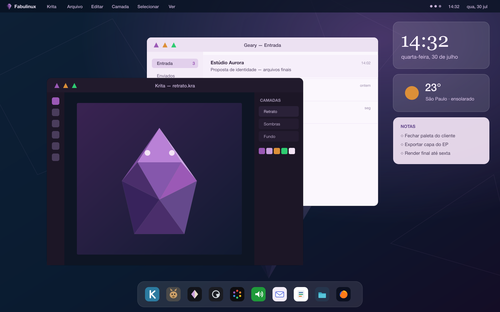

O Linux mais bem lapidado para você que quer criar.
Bonito, simples e sem terminal. Acolhe quem vem do Mac num universo Linux — uma alternativa acessível ao MacBook, com identidade própria.
Barra de menu global, dock com seus apps, widgets de relógio e clima — e os controles de janela em triângulo, à esquerda. Bonito e coeso desde o primeiro boot.

Conceito visual do desktop do Fabulinux. Apps mostrados: Krita, Geary, GIMP, Inkscape, Darktable, DaVinci Resolve, LMMS, OnlyOffice, Arquivos e Firefox.
Quem vem do Mac não sente falta do macOS — sente falta de cinco experiências concretas. É nelas que o Fabulinux caprichou.
Um tema, um set de ícones, tipografia consistente e animações suaves.
Uma dock elegante e um Spotlight que abre com ⌘+Espaço.
Três dedos para ver janelas, deslizar entre áreas de trabalho.
A tecla ⌘ mapeada para ⌘+C, ⌘+V, ⌘+Espaço, ⌘+Tab.
Impressora, alta resolução, gestão de cor e fontes prontas.
Curadoria para designers, fotógrafos, videomakers, youtubers, DJs, produtores e escritores. Tudo gratuito, open source e a um clique. ★ = carro-chefe.
O essencial, acolhedor.
Melhor que o WPS.
Nível profissional.
Fluxo RAW de verdade.
Para youtubers.
O GarageBand grátis.
Curado e opinativo — o sistema chega pronto; você cria, não configura. E é construído para não quebrar.
O núcleo é somente-leitura, com atualizações atômicas e rollback automático. Praticamente impossível "não bootar".
Um ambiente lindo e coeso, pré-configurado em modo quiosque: a experiência é fixa, elegante e à prova de bagunça.
Apps isolados via loja visual. Instalar ou mexer num programa nunca afeta o sistema.
Arquitetura comprovada: é a mesma fundação do SteamOS da Valve — imutável + KDE travado — rodando em milhões de Steam Decks.
O gesto familiar do Mac, com a forma da nossa gema. Cada faceta é um triângulo — dos marcadores de lista aos botões de fechar, minimizar e maximizar. Uma pedra preciosa lapidada, do símbolo à interface.
A identidade está pronta e o desenvolvimento começou. Siga o repositório para ver a gema ganhar forma — e, em breve, a primeira imagem para instalar.
Seguir no GitHub